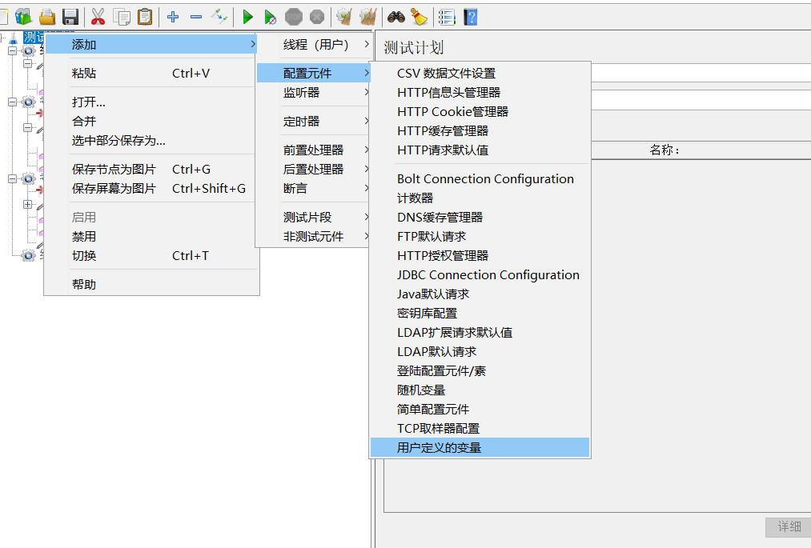
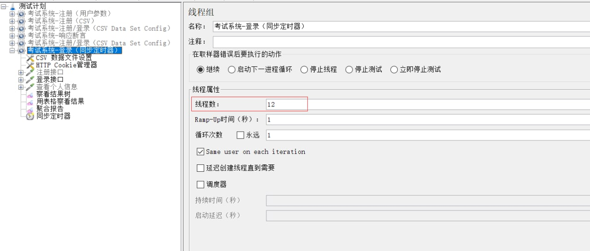

JMeter 工具使用
主要组件介绍
测试计划：使用 JMeter 进行测试的起点，它是其它 JMeter 测试元件的容器。
线程组：代表一定数量的并发用户，它可以用来模拟并发用户发送请求。实际的请求内容在Sampler中定义，它被线程组包含。可以在“测试计划->添加->线程组”来建立它，然后在线程组面板里有几个输入栏：线程数、Ramp-Up Period(in seconds)、循环次数，其中Ramp-Up Period(in seconds)表示在这时间内创建完所有的线程。如有8个线程，Ramp-Up = 200秒，那么线程的启动时间间隔为200/8=25秒，这样的好处是：一开始不会对服务器有太大的负载。线程组是为模拟并发负载而设计。
取样器（Sampler）：模拟各种请求。所有实际的测试任务都由取样器承担，存在很多种请求。如：HTTP 、ftp请求等等。
监听器：负责收集测试结果，同时也被告知了结果显示的方式。功能是对取样器的请求结果显示、统计一些数据（吞吐量、KB/S……）等。
断言：用于来判断请求响应的结果是否如用户所期望，是否正确。它可以用来隔离问题域，即在确保功能正确的前提下执行压力测试。这个限制对于有效的测试是非常有用的。
逻辑控制器：允许自定义JMeter发送请求的行为逻辑，它与Sampler结合使用可以模拟复杂的请求序列。
定时器：负责定义请求（线程）之间的延迟间隔，模拟对服务器的连续请求。
配置元件：维护Sampler需要的配置信息，并根据实际的需要会修改请求的内容。
前置处理器和后置处理器：负责在生成请求之前和之后完成工作。前置处理器常常用来修改请求的设置，后置处理器则常常用来处理响应的数据。
测试计划 Test Plan
用来描述一个性能/接口测试脚本和场景设计，包含与本次测试所有相关的功能。也就是说，使用jmeter进行测试的所有内容都是于基于一个测试计划的。
测试计划名称和注释：整个测试脚本保存的名称，和对该测试计划的注释，可以自定义，最好能表达脚本的意义。
用户定义的变量：在测试计划上可以添加用户定义的变量，相当于是全局变量。一般添加一些系统常用的配置。如果测试过程中想切换环境，切换配置，一般不建议在测试计划上添加变量，因为不方便启用和禁用，一般是直接添加用户自定义变量组件。如下所示：

**独立运行每个线程组： **用于控制测试计划中的多个线程组的执行顺序。不勾选时，默认各线程组并行、随机执行。如下图，线程组1和线程组2的线程是并行执行的，执行过程线程的执行顺序是不可预料的。

如果勾选了独立运行每个线程组，可以保证线程组1的执行一定在线程组2之前，线程组1执行完毕，才会执行线程组2，即顺序执行各线程组。
补充说明：
线程组中的取样器的执行顺序：默认是从上到下执行。交替控制器、随机控制器、随机顺序控制器和循环控制器等可以改变取样器的执行顺序。
主线程结束后，运行tearDown线程组（Run tearDown Thread Groups after shutdown of main threads）
当线程组停止运行时仍继续运行tearDown线程组，该选项结合线程组的执行配置使用
函数测试模式（Functional Testing）
如果选中了此选项，同时监听组件如“查看结果树”配置了保存到一个文件中，那么jmeter会将每次的请求结果保存到文件中。一般不建议勾选。
添加目录或jar包到classpath（Add directory or jar to classpath）
添加文件或jar包，此功能最常用于调用外部jar包。当脚本需要调用外部的java文件或jar包时，可以把jar包路径添加到这里，然后在beanshell中直接import进来，并调用jar包中的方法。
线程组 Thread Group
一个性能测试请求是基于一个线程组完成的，一个测试计划必须至少有一个线程组。
一个计划中可创建一个或多个线程组，在测试计划中，多个线程组是并行执行的。也就是说这些线程组是同时被初始化并同时执行线程组下的Sampler的

区域1
- 继续：继续执行接下来的操作
- Start Next Loop（启动下一进程循环）：忽略错误，执行下一个循环
- 停止线程：退出该线程（不z再进行此线程的任何操作）
- 停止测试：等待当前执行的采样器结束后，结束整个测试
- Stop Test Now：直接停止整个测试
区域2
线程数：模拟的用户数量。线程数也就是并发数，每个线程将会完全独立的运行测试计划，互不干扰。多个线程用于模仿对服务器的并发访问
Ramp-up Period（in seconds）：达到指定线程数所需要的时间。
举例：线程数设置为50，此处设置为5，那么 每秒启动的线程数 = 线程数50/5 = 10当这个值设置的很小、线程数又设置的很大时，在刚开始执行时会对服务器产生很大的负荷
循环次数：选中“永远”，则一直循环下去。
延迟创建线程直到需要（Delay Thread creation until needed）：当线程需要执行的时候，才会被创建。如果不选择这个选项，那么，在计划开始的时候，所有需要的线程就都被创建好了。
调度器：配合区域3说明吧。
区域3
- 持续时间（秒）：在此选项填入N，说明这个计划，从某个开始时间算起，执行N秒后结束。（会忽略 结束时间 的选项）
- 启动延迟（秒）：在此选项填入N，手动点击开始执行计划，然后延迟N秒后，计划才真正开始执行。（会忽略 启动时间 的选项）
- 启动时间：当点击开始测试时，将等到此处填写的启动时间，然后真正开始测试。
- 结束时间：当开始测试时，将等到指定的开始时间开始测试，然后会停在此处填写的时间点结束。
调度器
- 如果不想立即执行执行，可以通过调度器控制测试执行的开始时间和结束时间。
- 当测试开始时，如果设置了调度器，JMeter将等待直到到了开始时间。在每个周期结束，JMeter将会检查是否到达结束时间，如果达到，停止运行；否则测试继续运行直到达到了重复限制。
HTTP请求
监听器
监听器(Listener)负责收集测试结果，同时也被告知了结果显示的方式。
我们常用的包括：聚合报告、查看结果树、用表格查看结果，都支持将结果数据写入文件。其他的添加上去看看就行。聚合报告前面我们介绍过，后面是查看结果树和用表格查看结果的截图。
参数化方法
用户参数
场景：批量注册不同的帐号，参数为用户名、密码、年级等可使用用户参数的方法，这是JMeter自带的方法。
方法：右键单击线程组->前置处理器->用户参数

格式：${参数名}

运行结果

CSVREAD函数
调用一个自带的自定义函数CSVREAD函数，用于读取CSV文件。
CSV文件的特点是以逗号分隔
- 创建一个CSV文件，最好与 xxxx.jmx 文件放在同一级目录下。使用绝对路径可能会出现问题
- CSVREAD函数使用方法
- 工具->函数助手对话框->函数助手，选择CSVRead函数
- 填入文件名和文件列号
- 点击生成
- 复制函数字符串
将函数字符串粘贴到请求信息中
运行结果
CSV DATA SET CONFIG
- 添加 CSV data set config：右键单击线程组->添加->配置元件->CSV Data Set Config
- 填入文件名（filename）、编码方式（file encoding）、变量名（以逗号分隔）
是否允许带引号（Allow quoted data）：默认不考虑（false），如果数据中有”123,456”，不考虑引号的话，则会按照逗号分隔。如果考虑引号，逗号不会被分隔，即123,456为一个整体。
格式${变量名}
运行结果
场景：只有登录之后才能查看个人动态，所以此时需要使用到cookie
不添加cookie
不添加cookie时，即使是同一个用户在请求不同接口，服务器并不能知道当前发起请求的人是谁。所以，虽然同一个人登录了，再次请求查看个人动态时，服务器会提示用户未登录。
添加HTTP cookie管理器（在线程组里面添加，添加位置任意，不需要做任何配置）
作用：会获取发起登录请求时的cookie信息，当同一个人再次发起请求（比如查看个人动态）时，cookie信息就会被传入。关联纽带是同一个用户。
登录与其他请求需要在同一个线程组内
逻辑控制器
循环控制器
- 循环控制器可以设置请求的循环次数或永久循环
- 作用：该控制器下的取样器请求可以循环运行
事务控制器
作用： 事务控制器会生产一个额外的采样器，用来统计该控制器子结点的所有时间。
在线程组下创建事务控制器参数
- Generate parent sample：(选中这个参数结果展示如下图红框，否则显示为下图蓝框)
- Include duration of timer and pre-post processors in generated sample：选中这一项会统计定时器(timer)的时间，否则只统计采样器(sample)的时间
事务控制器可以将对各请求放在同一个事务中。如果选中Generate parent sample，则聚合报告中只显示事务控制器的数据，而不会显示其中的各个请求的数据，反之则全部显示。
断言
断言(Assertions)可以用来判断请求响应的结果是否如用户所期望的。它可以用来隔离问题域，即在确保功能正确的前提下执行压力测试。这个限制对于有效的测试是非常有用的。
两个重要断言：响应断言和JSONAssertion

前置/后置处理器
前置处理器(Pre Processors)和后置处理器(Post Processors)负责在生成请求之前和之后完成工作。前置处理器常常用来修改请求的设置，后置处理器则常常用来处理响应的数据。我们主要在动态关联中用到后置处理器的正则表达式提取器。
https://www.cnblogs.com/fengpingfan/p/4755411.html
聚合报告

样本：并发量
平均值：平均响应时间
中位数：响应时间的中位数
90%百分位：90％的样品不超过此时间。 剩余的样本至少要花这么长的时间。
95%百分位：95％的样品不超过此时间。 剩余的样本至少要花这么长的时间。
99%百分位：99％的样品不超过此时间。 剩余的样本至少要花这么长的时间。
最小值：最小响应时间
最大值：最大相应时间
异常：本次测试中出现异常的请求的数量/请求的总数量
吞吐量：默认情况下表示每秒完成的请求数
吞吐量 = 请求总数 / 总花费时间接收KB/sec：每秒从服务器端接收到的数据量，以kb为计算的单位
发送KB/sec：每秒发送到服务器的数据量，以kb为计算的单位
95%响应时间 2、5、8原则，2秒性能很好，5秒可以接受，8秒快不能接受
定时器
定时器(Timer)负责定义请求之间的延迟间隔
同步定时器（Synchronizing Timer）：相当于一个储蓄池，累积一定的请求，当在规定的时间内达到一定的线程数量，这些线程会在同一个时间点一起并发，可以用来做大数据量的并发请求。


值得注意的是模拟用户数量和线程数有关。模拟用户数量为3,代表着3个线程一次发送请求。
如果用户数不足，将会一直等待（因为设置超时时间为0，0为一直等待时间。单位为ms）
并发开始时间基本相同

循环并发
图形结果
作用：通过图形展示出本次性能测试数据的分布。 图形结果一般作为聚合报告的分析辅佐
- 样本数目：总共发送到服务器的请求数。
- 最新样本：代表时间的数字，是服务器响应最后一个请求的时间。
- 吞吐量：服务器每分钟处理的请求数。
- 平均值：总运行时间除以发送到服务器的请求数。
- 中间值：有一半的服务器响应时间低于该值而另一半高于该值。
- 偏离：表示服务器响应时间变化、离散程度测量值的大小。
正则表达式提取
运用Jmeter正则提取器，可以从请求的响应结果中取到需要的内容，从而实现关联。关联是请求与请求之间存在数据依赖关系，需要从上一个请求获取下一个请求需要回传回去的数据
**正则表达式(regular expression)**描述了一种字符串匹配的模式（pattern），可以用来检查一个串是否含有某种子串、将匹配的子串替换或者从某个串中取出符合某个条件的子串等。
| 字符 | 描述 |
|---|---|
| * | 匹配前面的子表达式零次或多次。例如，zo* 能匹配 “z” 以及 “zoo”。* 等价于{0,}。 |
| + | 匹配前面的子表达式一次或多次。例如，’zo+’ 能匹配 “zo” 以及 “zoo”，但不能匹配 “z”。+ 等价于 {1,}。 |
| ? | 匹配前面的子表达式零次或一次。例如，”do(es)?” 可以匹配 “do” 、 “does” 中的 “does” 、 “doxy” 中的 “do” 。? 等价于 {0,1}。 |
| ( ) | 标记一个子表达式的开始和结束位置。子表达式可以获取供以后使用。 |
| . | 匹配除换行符 \n 之外的任何单字符。要匹配 . ，请使用 . 。 |
构造正则表达式的方法和创建数学表达式的方法一样。也就是用多种元字符与运算符可以将小的表达式结合在一起来创建更大的表达式。正则表达式的组件可以是单个的字符、字符集合、字符范围、字符间的选择或者所有这些组件的任意组合。
服务器性能监控
安装JMeter插件管理器 JMeter Plugins Manager
下载地址：https://jmeter-plugins.org/wiki/PluginsManager/
将其放在 lib/ext目录下
重启jmeter生效，在选项中，就可以找到plugins manager（插件管理器）
常用的插件
3 Basic Graphs三个基本图表，可以监控：
Average Response Time–平均响应时间
Active Threads–活动的用户数）
Successful/Failed Transactions–成功/失败的事务数
5 Additional Graphs五个附加图表，可监控：
Response Codes–响应码
Bytes Throughput–吞吐量
Connect Times–连接时间
Latency–latencies over time:主要展示的是负载测试期间的响应延迟时间，延迟时间指的是请求结束到服务器开始响应的这段时间
Hits/s–每秒点击数/连接数
Custom Thread Groups自定义线程组，jmeter中，一个线程代表一个用户，用于设置用户加载的方式，怎么去增加用户。
Adds new Thread Groups–增加新的线程组
Stepping Thread Group–步进线程组
Ultimate Thread Group–终极线程组
Concurrency Thread Group–并发线程组，可以设置梯形的加压方式
Arrivals Thread Group–抵达线程组
Free-Form Arrivals Thread Group–自由抵达线程组
PerfMon (Servers Performance Monitoring)服务器性能监控，允许收集目标服务器资源指标，如cpu，内存，网络，磁盘等。
需要在目标计算机上启动ServerAgent服务。下载地址：https://github.com/undera/perfmon-agent/blob/master/README.md把这几个插件都勾上，然后安装，安装后重启即可使用这些插件
启动服务方法：
运行 CMDRunner.jar 包，启动 jar 包时指定端口为 8085
命令：java -jar CMDRunner.jar –tool PerfMonAgent –udp-port 7777 –tcp-port 8085
如何判断是运维问题还是开发问题
添加物理资源监控插件，在运行请求时，会动态监测CPU、内存、网络IO等资源。刚开始性能比较低时，CPU压力比较小，当增加压力时，CPU会升高，如果性能不达标，CPU飙升至85%以上就是运维的问题，需要抬升资源。

压力测试需要和产品经理进行沟通，询问产品经理到底测试什么场景
第一种：先进行测试，出结果后再定测试方向和目标。
- 需要去询问运维，服务器现有配置（硬件信息，如CPU、内存、硬盘、带宽等），再梳理测试场景
- 比如我测试的机器 CPU是4核3.8GHz，10TB 7200转 西部数据机械黑盘，8GB双通道内存 3200GHz
- 测试的场景是批量登录接口
- 我的性能目标是基于这样的配置，能支撑学校的学生在200人左右登录。或者在不改代码的情况下，该配置最大能支持多少人的并发量或吞吐。
- 如果把物理配置再加大一倍，能测试出什么水平（代码没问题，物理资源不够）
- 需要核算成本，使用人数（规模）
- 如果2核4G内存可以支持学校200人同时登录，那么400人时需要资源翻倍
- 测试需要测不同场景，分别能达到什么样的水平
第二种：老前辈已经测试过了，直接告诉你，这次是否能达到目标
非并发场景看吞吐量，并发场景看响应时间
参考